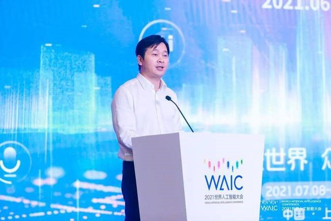
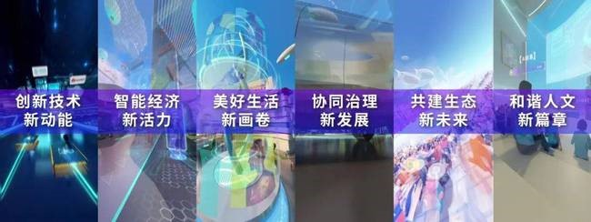
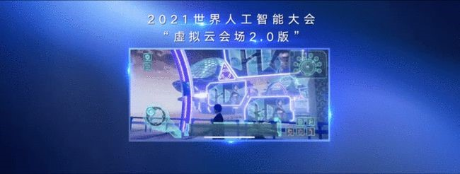
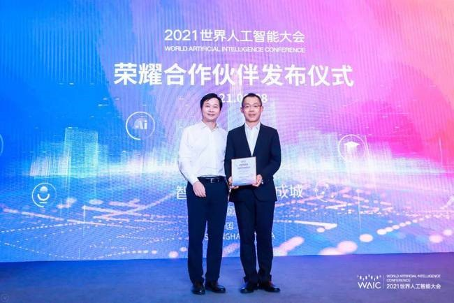
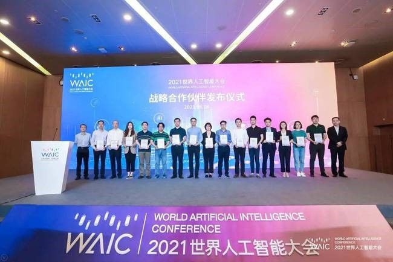

2021世界人工智能大会 倒计时30天暨合作伙伴发布会顺利举办
大会进入筹备冲刺阶段
2021年6月8号下午，2021世界人工智能大会倒计时30天暨合
作伙伴发布会在上海世博展览馆1号会议室举行，大会观众及媒体注册
报名通道同时开启，这标志着本年度大会已进入筹备冲刺阶段。世界人
工智能大会组委会办公室常务副主任、市经济信息化委主任吴金城以及
浦东新区、徐汇区、东浩兰生集团、上海广播电视台等方面领导出席。
2021世界人工智能大会由国家发展和改革委员会、工业和信息化
部、科学技术部、国家互联网信息办公室、中国科学院、中国工程院、
中国科学技术协会、上海市人民政府共同主办，将于2021年7月8日
至7月10日，以线下线上结合的方式召开。论坛主会场继续设在浦东
世博中心，联动徐汇等区。展览设在世博展览馆，于7月7日开展。

市经济信息化委主任吴金城介绍，世界人工智能大会从2018年以
来，已连续成功举办了三届，成为人工智能行业的国际顶级盛会。本届
大会将以“智联世界 众智成城”为主题，结合人民城市建设，充分展示城
市数字化转型的新亮点、新趋势、新模式、新成效。他提出，新一届大
会要坚持高端定位，打响大会特色品牌。围绕全球AI科技风向标、产
业加速器、应用展示台和治理议事厅的大会定位，更加凸显大会亮点打
造。
云平台2.0及虚拟云会场2.0亮相

会议上，线上云展览平台2.0和虚拟云会场2.0亮相，并开启了观
众及媒体报名通道。据东浩兰生会展集团介绍，云展览平台2.0围绕“智
联世界 众智成城”主题，结合短视频表现方式，采用轻量化、平台化的
呈现形式，并通过线上线下交互的互动功能将2020年“3D虚拟AI家园”
进行迭代升级。云展览平台2.0除拥有短视频功能外，还包含论坛直播、
企业视频、评论弹幕、实时翻译、人物画像、企业大数据精准化采集、
快捷搜索、精准投放、一键预约、建立企业专属名片等功能。

宣布大会合作伙伴
会议上，组委会办公室宣布了大会荣耀、战略、卓越和精英等类别
合作伙伴名单，市经济信息化委主任吴金城、浦东新区科经委主任徐欣、
徐汇区科委副主任许谷声、东浩兰生（集团）有限公司副总裁周瑾分别
代表大会为合作伙伴代表颁发证书。交通银行党委委员钱斌作为大会合
作伙伴代表进行了发言。

本届大会荣耀合作伙伴为：交通银行股份有限公司。
s
